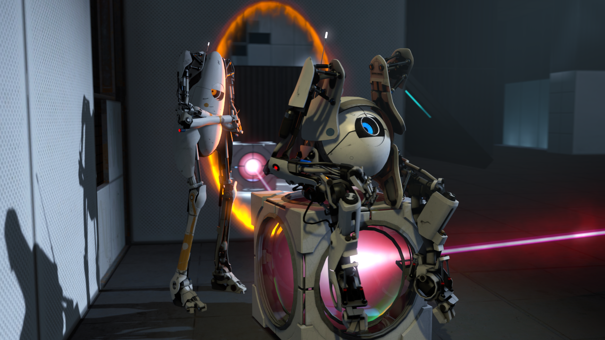
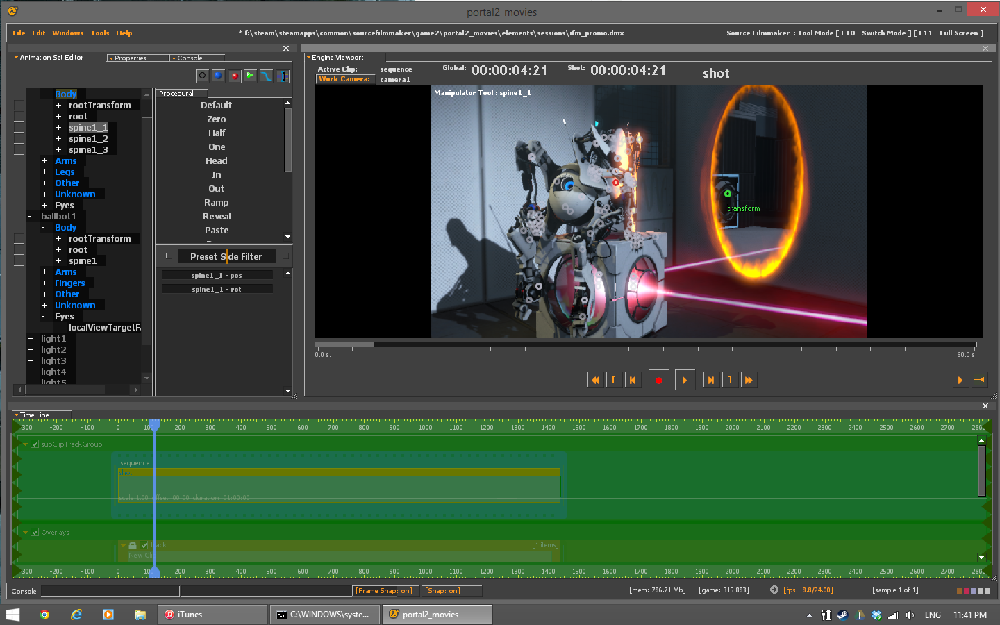
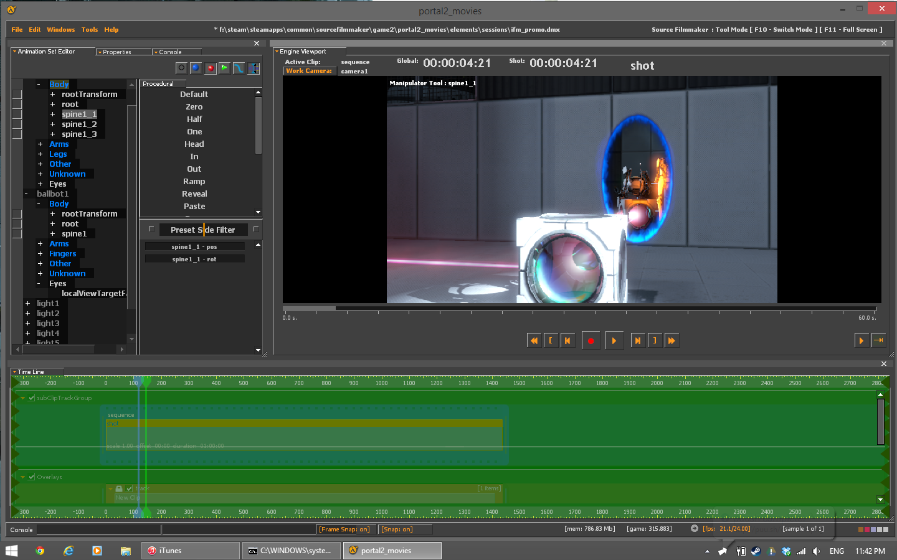
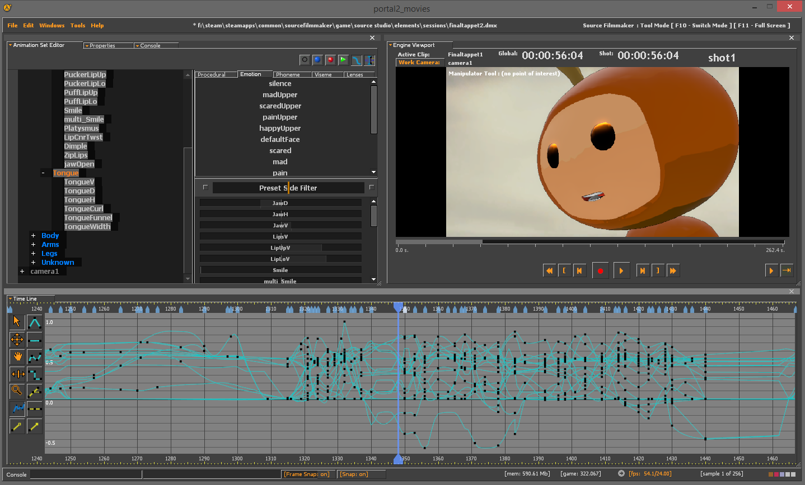

AUGUST LOOLAMCharacter TD |
| |
|
|
|
|
|
|
|
|
|
|
The Portal 2 Interactive Filmmaker

DOWNLOAD
What is the IFM?
The IFM is an early internal build of SFM from mid 2011 designed to run on the Portal 2 branch of Source! This was most likely the very same version of SFM used to make the Portal 2 trailers/commercials. Functionally it is identical to SFM but with portals!

Installation:
To install the IFM place these two folders in your sourcefilmmaker directory. (e.g Steamapps/common/sourcefilmmaker) Once you have the IFM installed you can launch it by double clicking on Portal2_movies.bat in the game2 folder. When the IFM launches you will be greeted with an SFM UI, from here you can use IFM.
Tips:
- If the Portal2_movies.bat fails to start IFM:
1. Open the SFM SDK in steam.
2. Click "Remove Environment Variables. A popup will appear, hit Yes.
3. Select a mod in the drop down (any will do). Once again a popup will appear, hit Yes.
4. Close the SDK.
5. The IFM should now be able to run from the batch file.
- When recording portals you need to add the portal models to your scene as existing elements and manually move the "grid" bone out of the way to make them visible.
2. Click "Remove Environment Variables. A popup will appear, hit Yes.
3. Select a mod in the drop down (any will do). Once again a popup will appear, hit Yes.
4. Close the SDK.
5. The IFM should now be able to run from the batch file.
- IFM can read SFM scene dmxs without any trouble. You need to open the dmx in a text editor and change the first line from:
to
- Do NOT start IFM with -sfm_resolution 1080 without downsampling your monitor first!

Issues:
- Due to a bug in the renderer the IFM can only render at a resolution half the size of your systems resolution, so unless you have a 4k monitor you wont be rendering anything in 1080p, also adding -sfm_resolution 1080 to the command line will break rendering entirely without a 4k monitor.
- IFM has python support and support for IK rigs just like SFM, however IFM relies on an older version of python that you wouldn't be able to install without uninstalling SFM You can still apply IK rigs in SFM and then open the scene in IFM to animate it if your inclined.
- Valves official HWM tf2 models will crash IFM, tf2 maps wont run either (Its Portal 2 silly) Oddly enough community made HWM models will work just fine
- IFM uses different lighting algorithms than SFM they look pretty but they are expensive, while SFM is supposed to be a render on steroids IFM can take as long as Maya or any other traditional 3d animation app to do its thing.
- Portal 2 coop maps will unload themselves after a few moments if you load them in IFM, this is because portal 2 will kick you out of the map thinking your partner has disconnected, apparently IFM treats loading a multiplayer map like a normal coop session
EVERYTHING IS PROVIDED AS IS AND NEITHER I NOR VALVE ARE RESPONSIBLE FOR ANY DAMAGES TO YOUR FILES OR SYSTEM!
DOWNLOAD
Why are you doing this?
I feel like its a good time to do it, Portal 2 is 4 years old now and SFM is 3 years old, internally Valves switched to Source 2 and I feel like we wont see any more major SFM updates till SFM gets ported to Source 2. I feel this tool could be of benefit to the community. Valve said to my tour group when I visited they would love to see more (non tf2) art come from SFM. And no I am not under an NDA for this piece of software, the only previously "new" thing contained in this release is the Portal 2 specific ifm.dll, the rest of the content provided was taken from the retail copies of a CD copy of Portal 2 and SFM or created by myself. I have designed this tool in such a way that you NEED to have a legit steam copy of both portal 2 and SFM installed for it to run, both to keep the content size small and discourage piracy also this allows it to plug into SFMs workshop and SFM itself to share dmxs and assets. With all of these things considered it seemed that sharing it was the best decision for the community as a whole.So go forth and animate!
| REEL | | | RESUME | | | FINE ART | | | RIGGING | | | TOOLS | | | CONTACT |
aug550@gmail.com